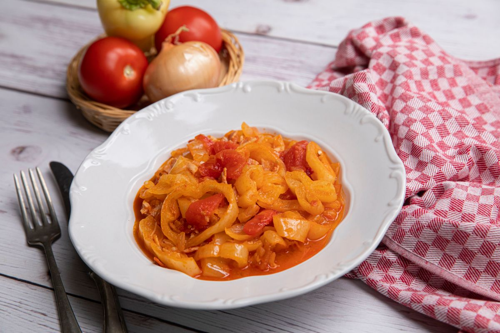

A lecsó egy hagyományos magyar étel, amelyet főként nyáron készítenek friss zöldségekből. Az alap hozzávalók közé tartozik a paradicsom, paprika, hagyma és füstölt szalonna. Az étel elkészítése során a zöldségeket apróra vágják, majd olajon vagy szalonnazsíron megpirítják. A lecsó ízesítéséhez pirospaprikát és sót használnak, és gyakran friss kenyérrel tálalják. Az étel egyszerűsége és gazdag ízvilága miatt népszerű a magyar konyhában. Variációi között megtalálható a tojásos, kolbászos vagy rizses lecsó is.
